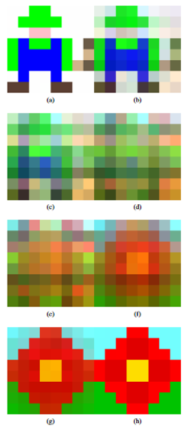
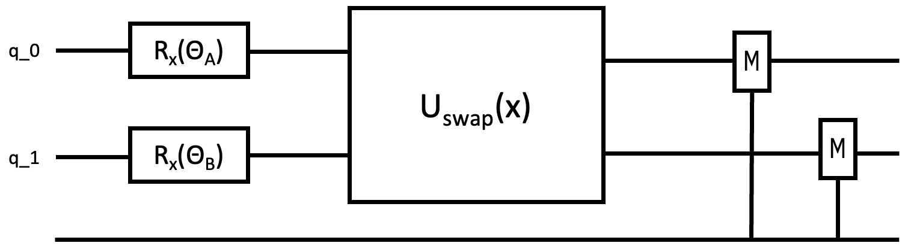
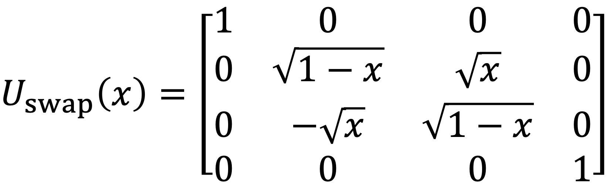

Quantum Composer
Quantum Procedural Generation

Source: Procedural generation using quantum computation
Procedural generation uses partial quantum swap operator to convert from one set of qbits to a different one according to a set proportion, x
Quantum Circuit

The quantum circuit consists of rotations by specified angles to get qbits a and b into the proper phase. Then, a unitary operation consisting of a partial swap from a to b is applied; the relevant measurement is on qbit a at the end of the circuit.
Swap Matrix
